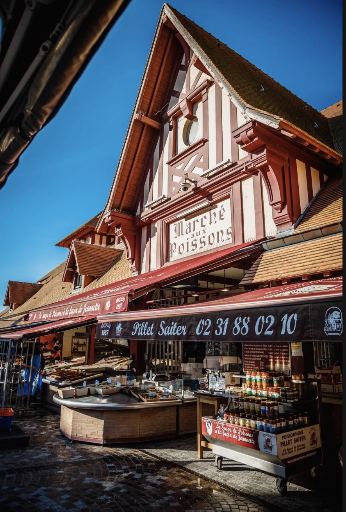
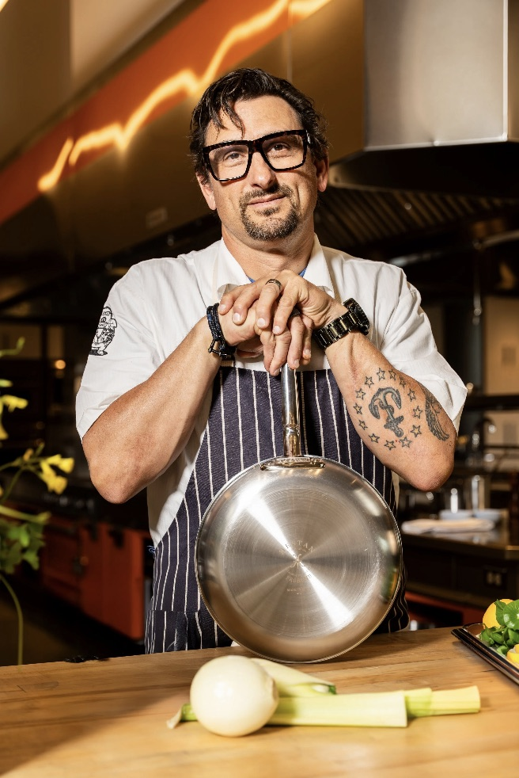

Un fils de pêcheur, une cuisinière normande, et le port du Havre comme toile de fond. L'Écume est née d'une passion vraie pour la mer et ce qu'elle donne.
La mer ne ment pas. Elle vous donne ce qu'elle a, pas ce que vous voulez.
Thomas Leroy, cofondateur de L'Écume
Thomas grandit avec son père Henri, marin-pêcheur au Havre depuis trente ans. Chaque matin de vacances scolaires, il est sur le quai avant le lever du soleil. C'est là qu'il apprend à reconnaître un poisson frais rien qu'à son œil. Marie, dans le Calvados, apprend le respect du produit en jardinant avec sa grand-mère Simone.
Thomas et Marie se rencontrent en première année. Deux visions du même amour de la table. Ils font leurs stages ensemble, dans des adresses normandes qui leur apprennent que la cuisine vraie, c'est d'abord du respect : pour le producteur, le pêcheur, et celui qui mange.
Thomas passe deux ans dans une brasserie parisienne réputée. Il y apprend la cadence, la rigueur, et ce que ça coûte de couper les coins ronds. Marie travaille comme cheffe pâtissière dans un hôtel de bord de mer en Bretagne. Le soir, ils parlent de leur futur restaurant. Pas d'une grande table. D'un endroit vrai, au bord du port.
Ils trouvent un local au Quai de Southampton, une ancienne remise de matériel portuaire avec trois grandes fenêtres donnant sur le bassin. Ils le rénovent eux-mêmes pendant quatre mois, avec l'aide du père de Thomas et de quelques amis. Le nom "Écume" vient de ce que Henri appelait le brouillard marin qui enveloppe le quai au petit matin. L'ouverture a lieu un jeudi d'avril. La salle est pleine dès le deuxième soir.
La carte change toutes les semaines. Parfois tous les deux jours. Thomas est à la criée le mardi, le jeudi et le samedi matin. Marie imagine les plats à partir de ce qu'il rapporte. L'Écume est devenu une adresse havraise, le genre d'endroit où les habitués commandent sans regarder la carte, parce qu'ils savent que ce qui est proposé ce jour-là, c'est le meilleur de la marée.
Nous ne servons jamais un poisson qui ne mérite pas d'être servi. Si la criée est décevante, la carte change. Si une livraison ne répond pas à nos standards, elle repart. La fraîcheur n'est pas un argument : c'est une règle non négociable.
Nos poissons viennent des côtes normandes. Nos légumes sont achetés au marché Saint-Roch ou livrés par deux maraîchers de la région. Nos fromages et nos crèmes viennent de Normandie. Ce n'est pas une posture : c'est une conviction que la qualité commence par la proximité.
L'Écume n'est pas un restaurant intimidant. Pas de protocole, pas de jargon. On vient ici pour manger bien, dans une bonne compagnie, sans chichis. Thomas et Marie passent souvent en salle pour saluer les tables. Parce qu'un repas, c'est aussi une rencontre.

Fils de pêcheur havrais, formé à Rouen. Thomas cuisine avec les mains et avec la mémoire, celle des quais de son enfance et des recettes que son père improvisant le soir avec ce qui restait dans la cale.
Normande pur jus, Marie transforme ce que Thomas rapporte de la criée en quelque chose d'inoubliable. Ses desserts, souvent à la pomme ou au caramel beurre salé, ont leur fan-club chez les habitués.
Lucie est là depuis le premier service. Elle connaît les habitudes de chaque client régulier et a le don de rendre une table ordinaire mémorable. C'est elle qui fait que L'Écume, ça ressemble à une maison.